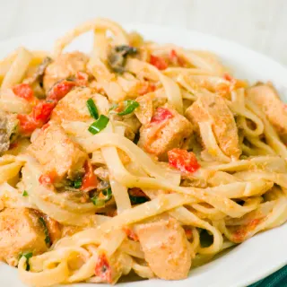
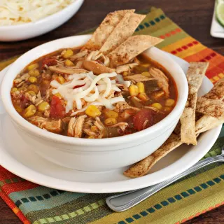
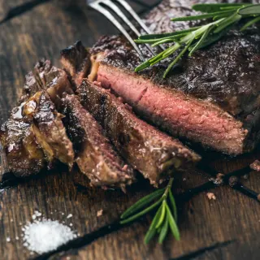
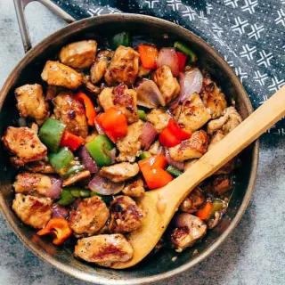

Cajun Chicken Pasta

Servings: 2
Ingredients:
- 4 ounce linguine pasta
- 2 chicken breast halves; cut up
- 2 teaspoons Cajun seasoning
- 2 tablespoons Butter
- 1 Green bell pepper; chopped
- 1/2 red bell pepper; chopped
- 2 cup mushrooms; sliced
- 1 green onion; minced
- 1 1/2 cups Heavy cream
- 1/4 teaspoon Dried basil
- 1/4 teaspoon Lemon Pepper
- 1/4 teaspoon Salt
- 1/8 teaspoon Garlic Powder
- 1/8 teaspoon Black pepper
- 2 tablespoons Parmesan cheese; grated (Optional)
Directions:
- Bring a large pot of lightly salted water to a boil. Add linguini pasta, and cook for 8 to 10 minutes, or until al dente; drain.
- Meanwhile, place chicken and Cajun seasoning in a bowl, and toss to coat.
- In a large skillet over medium heat, saute chicken in butter until no longer pink and juices run clear, about 5 to 7 minutes.
- Add green and red bell peppers, sliced mushrooms and green onions; cook for 2 to 3 minutes.
- Reduce heat, and stir in heavy cream. Season the sauce with basil, lemon pepper, salt, garlic powder and ground black pepper, and heat through.
- In a large bowl, toss linguini with sauce. Sprinkle with grated Parmesan cheese.
|
Cheesy Chicken and Rice
Servings: 2
Ingredients:
- 1/2 can Cream of Chicken Soup
- 2/3 cups water
- 1/3 cup Rice; Uncooked, white
- 1/4 teaspoon Onion powder
- 1/8 teaspoon Black pepper
- 1 cups Mixed Vegetables; frozen
- 2 each Chicken breast; halved, about 1 pound
- 1/4 cup Cheddar cheese
Directions:
- Heat the oven to 375F.
- Stir the soup, water, rice, onion powder, black pepper and vegetables in a 2-quart shallow baking dish.
- Top with the chicken. Cover the baking dish.
- Bake for 50 minutes or until the chicken is cooked through and the rice is tender. Top with the cheese.
- Let the casserole stand for 10 minutes. Stir the rice before serving.
|
Chicken Tortilla Soup

Servings: 2
Ingredients:
- 1 1/3 cups Chicken Stock
- 1/3 whole Onions; diced
- 1/2 Tablespoons Garlic; crushed
- 1/4 tablespoon Chili Powder
- 1/6 large can Crushed Tomatoes
- 1/6 whole Lime
- 1/6 teaspoon Cumin
- Salt; to taste
- Pepper; to taste
- 1/16 teaspoon Cayenne; or more to taste
- 1/6 cup Vegetable oil
- 1/6 Bushle Cilantro
- 1/6 package Light sour cream
- 1/6 Can Corn
- 1/6 Can Black beans
- 1/6 whole Avocado
- 2 whole Chicken breast
Directions:
- In a large stockpot, heat 3 tablespoons of oil to medium-high heat. Add crushed garlic and chopped onions, and stir until onions just start to brown. Add the can of crushed tomatoes, cumin, cayenne pepper, chili powder, salt, pepper, and half of the lime juice. Turn up the heat until it bubbles, stirring constantly, then gradually stir in chicken stock. Turn down to low and simmer for 10 minutes. Add diced chicken. (Optionally add black beans or fresh corn kernels).
- To make the tortilla crisps, julienne 12 corn tortillas into narrow, uniform strips. In a saucepan, bring 1 cup of vegetable oil up to medium-high heat (takes about 5 minutes to come up to temperature -- be sure to test the heat of the oil by placing a corn tortilla bit into the oil -- it should bubble immediately). Deep-fry these tortilla strips in batches (2 mins or so -- do not let them turn a dark brown) -- transfer to paper towel to dry. They should be crispy.
- When ready to serve, plate the soup, then top with a mound of the tortilla strips.
- Optionally add avocado, sour cream, cheese, fresh corn kernels.
- Squeeze fresh lime juice into each bowl at the table.
- Soup itself can be made ahead, but make the corn tortilla strips fresh, just prior to serving...
|
Marinated Flank Steak

Servings: 2
Ingredients:
- 1 lbs beef flank steak
- Kosher salt; to taste
- Coarsely-ground black pepper; to taste
-- Marinade --
- 1/4 cup dry fruity red wine; (I use Beaujolais, Chianti, Merlot or Pinot Noir)
- 1/4 cup Soy sauce
- 1/8 cup olive oil
- 2 large cloves garlic; peeled and crushed
- 1/8 cup flat-leaf parsley; chopped
- Coarsely-ground black pepper; to taste
Directions:
- Score surface of steak by making shallow diagonal cuts across the grain about 1 1/2-inches apart to create a diamond-shaped pattern; repeat on second side of steak.
- In a small bowl, whisk together wine, soy sauce, oil, garlic, parsley and pepper until well combined. Place steak and marinade in a large heavy-duty zip-lock plastic bag. Press out as much air as possible from bag, seal, and massage lightly to distribute marinade and coat steak thoroughly.
- Place bag in a shallow dish and marinate in refrigerator for at least 8 hours, overnight, or up to 24 hours, turning and massaging occasionally.
- Preheat grill with high, direct heat. Grill is sufficiently hot when you can only hold your hand at grill level for only 2 or 3 seconds.
- While grill is preheating, remove steak from refrigerator and let come to room temperature before grilling (helps ensure meat cooks evenly).
- When ready to grill, remove steak from marinade, pat dry with paper towels, and season both sides liberally with salt and freshly ground pepper to taste (pressing seasonings into meat with your fingers). Clean grill grate well with wire brush and, to prevent sticking, brush with a light coating of oil.
- Place steak on prepared grill grate over a solid bed of hot coals or direct high heat on a gas grill. If using a gas grill, or if your grill has a lid, close it to allow smoke to add it's flavor. Grill steak about 3- to 4-inches* from heat source, for 4 to 5 minutes per side for medium-rare and 6 to 7 minutes for medium (grilling time varies with meat thickness). If desired, to create crosshatch marks, turn steak 45 degrees halfway through grilling on each side. Flank steak is best eaten medium-rare and nicely seared on the outside; flank steak cooked beyond medium will be tough. Do NOT overcook!
- To Broil (optional): Position oven rack about 4-inches from heat source, place broiling pan on oven rack, and heat broiler. When ready to broil, remove steak from marinade, pat dry with paper towels, and season both sides liberally with coarse salt and freshly ground pepper to taste (pressing seasonings into meat with your fingers). Place flank steak on hot broiling pan, coated with cooking spray. Leave oven door ajar, and broil 6 to 7 minutes on each side for medium-rare, 9 minutes on each side for medium.
- When steak is done to your liking, remove from grill and place on cutting board. Double check doneness by thermometer (rare - 130 to 140 degrees F, medium-rare - 140 to 150 degrees F, medium - 150 to 160 degrees F), or by touch (very rare feels soft and squishy, rare is soft to the touch, medium-rare yields gently to the touch, while medium yields only slightly to the touch and is beginning to firm up). Cover steak loosely with foil and let rest for 5 to 10 minutes (five minutes per inch of thickness), allowing meat juices to redistribute and settle. To serve, slice thinly on the bias (at a sharp angle) and across the grain, and arrange on warmed platter or plates.
|
Pepper Chicken Stir Fry

Servings: 2
Ingredients:
- 2 Chicken Breasts (cut into 1 inch pieces)
- 1 tablespoons light Soy Sauce
- 1/2 teaspoon minced Garlic
- 1/2 tablespoon Toasted Sesame Oil
- 1/2 teaspoon ground Black Pepper
- 1/8 cup Oyster Sauce
- 1 tablespoons Light Soy Sauce
- 1 tablespoon Vinegar
- 1/2 teaspoon ground Black Pepper
- 1/4 cup water
- 1 1/2 tablespoons Cornstarch (divided)
- 1 1/2 tablespoons Vegetable Oil (divided)
- 1/2 large Onion (cut into 1 inch pieces)
- 1/2 medium Green Bell Pepper (cut into 1 inch pieces)
- 1/2 medium Red Bell Pepper (cut into 1 inch pieces)
- 2 cloves Garlic (finely chopped)
- 1/2 piece Ginger (finely chopped)
Directions:
- Combine all the ingredients listed under marinade including the chicken and set aside for at least 15 minutes.
- Whisk together oyster sauce, soy sauce, vinegar, black pepper, half cup water and one tablespoon of cornstarch and set aside.
- Once the chicken has marinated, toss it in remaining two tablespoons cornstarch.
- Heat two tablespoons oil in a large pan and add the chicken pieces. Don't overcrowd the pan and if your pan is not large enough, do this in batches. Cook the chicken pieces on high heat for 3 minutes on each side. Remove the pieces from the pan and set aside.
- Add the remaining tablespoon of oil to the pan on high heat, and add the onions and bell peppers. Toss them in the pan for a minute or two till they brighten up in colour and have cooked slightly. Toss in the ginger and garlic and cook for another minute.
- Add the chicken pieces and sauce mixture to the pan. Toss everything well, and simmer for a minute or two till the sauce thickens and coats the chicken well. Serve hot with steamed rice or veggies on the side.
|